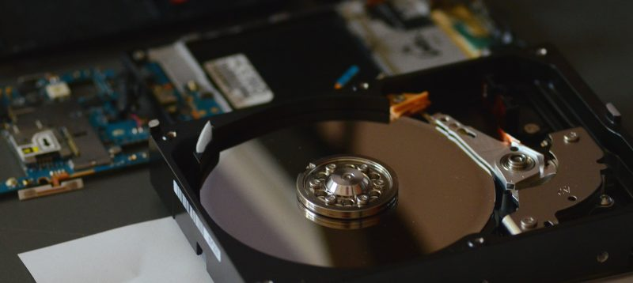

Siamo un team di studenti del Politecnico di Torino.
Recuperiamo hardware obsoleto, smontiamo i rottami ed estraiamo le componenti, installiamo software libero, facciamo assistenza informatica, e possiamo insegnarvi come fare queste cose. Più informazioni →
Le associazioni o un enti pubblici possono richiedere attrezzatura informatica ricondizionata da noi tramite la procedura dell'Area IT.
{PINNED} 